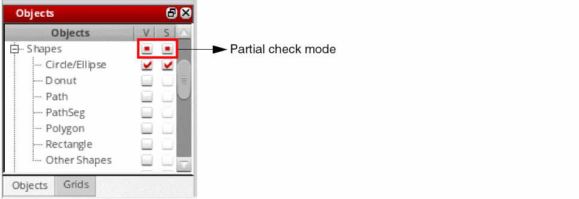
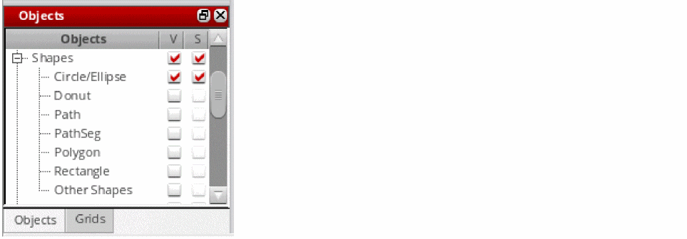

Visibility and Selectability of Parent-Child Objects
In the Objects and Grids panels, you can set the selectability and visibility of parent and child objects to be in synchronized or desynchronized mode.
-
Synchronized mode: This is the default mode where the parent and child items are in a synchronized state. When you reset the visibility and selectability of a parent, by selecting the corresponding check box in the panel, the visibility and selectability setting of the child items is set to coincide with that of the parent. If you now reset the visibility or selectability of a child, the parent is set to a partial check mode to indicate that one or more child items override the visibility or selectability settings of the parent, as shown in the following figure.
 -
Desynchronized mode: In this mode, the parent and child items are in a desynchronized state. The visibility and selectability of a child is not reset when you reset the visibility or selectability of the parent. For example, consider the Shapes object (parent) that has several child objects. The figure shows that only the Circle/Ellipse child object is set to visible. The other child objects are set to invisible.
If you now turn off the visibility of the parent by deselecting the corresponding V (Visibility) check box, the visibility and selectability states of the child objects are not affected. As a result, the V (Visibility) check box for the Circle/Ellipse child object stays selected, as shown in the following figure, but the child object would no longer be visible on the canvas.
If you now turn on the visibility of the parent, the visibility and selectability states of the child objects again remain unchanged, but the Circle/Ellipse child object becomes visible on the canvas.
Related Topics
Switching Between Synchronized and Desynchronized Modes of Parent-Child Objects
Return to top